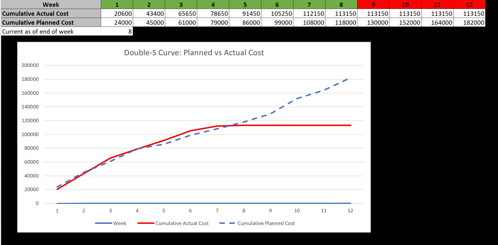

Learning Curve Template
This template uses a learning curve, fixed costs, and hourly costs to determine project break-even, ROI, cost, revenue, and more.
Download Template
Linear and Polynomial Regression
This template can be used to make predictions using multivariable linear and polynomial regression.
Download Template

Example Agile Project with EVM and Double-S Curve
This template can be used to manage an Agile Project with multiple teams and track project performance.
Download Template